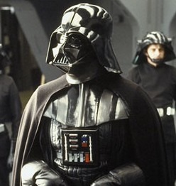

Darth Vader
a.k.a. Anakin Skywalker

Copyrighted film still image of the fictional character Darth Vader from the Star Wars franchise.
Here's a time line of Darth Vader's life:
- 41 BBY - Born on Tatooine
- 32 BBY - Becomes Obi Wan's, won his first pod race, won the Battle of Naboo and met Qui Gon Jinn and Padme
- 24 BBY - Reencounters with Padme
- 23 BBY - Becomes a Jedi and marries Padme
- 22 BBY - Trains Ahsoka Tano his Padawan
- 20 BBY - Ahsoka leaves the Jedi order
- 19 BBY - Becomes a Sith, Padme dies and becomes Darth Vader
- 3 ABY - Revealed to Luke that his father was he
- 4 ABY - Becomes the chosen one, he dies and becomes one with the force
"Once a heroic Jedi Knight, Darth Vader was seduced by the dark side of the Force, became a Sith Lord, and led the Empire’s eradication of the Jedi Order. He remained in service of the Emperor -- the evil Darth Sidious -- for decades, enforcing his Master’s will and seeking to crush the fledgling Rebel Alliance. But there was still good in him…"
--starwars.com